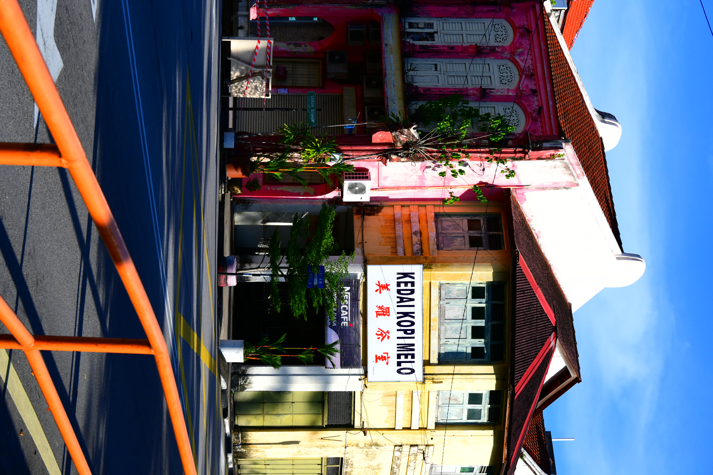
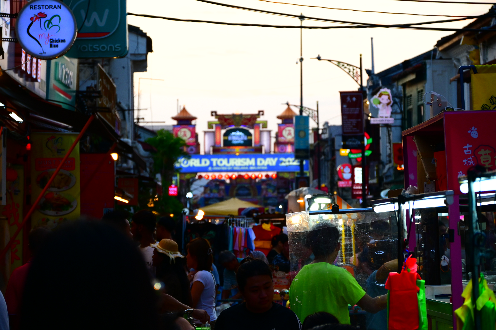
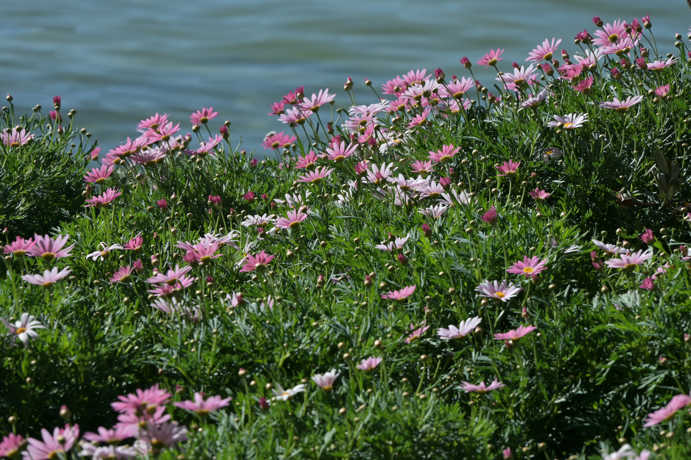
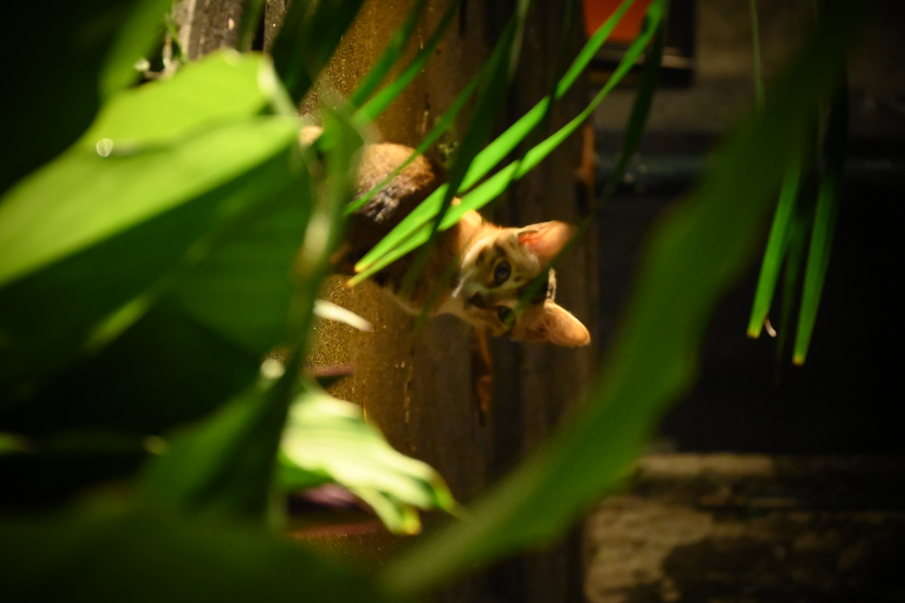
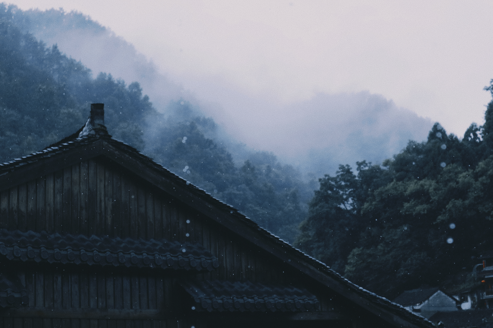
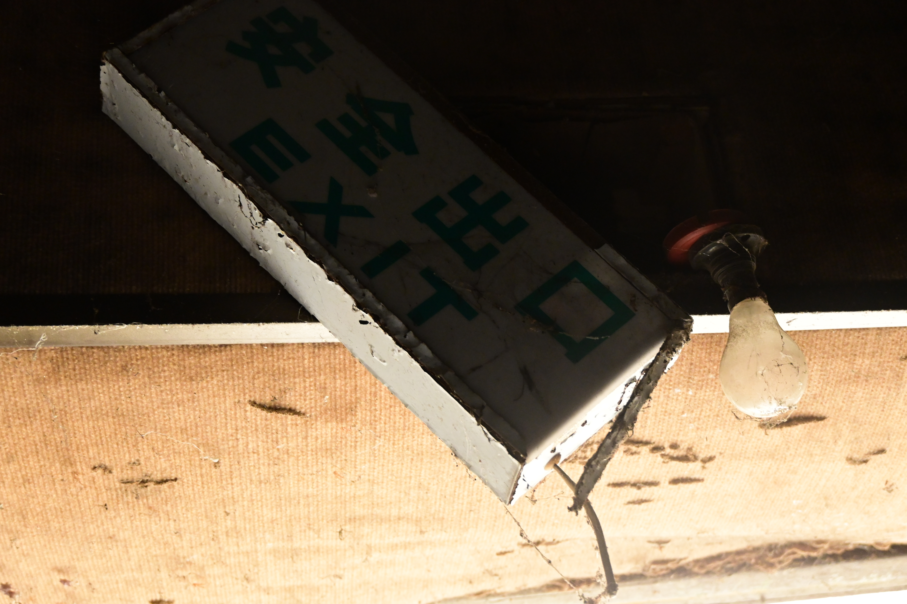
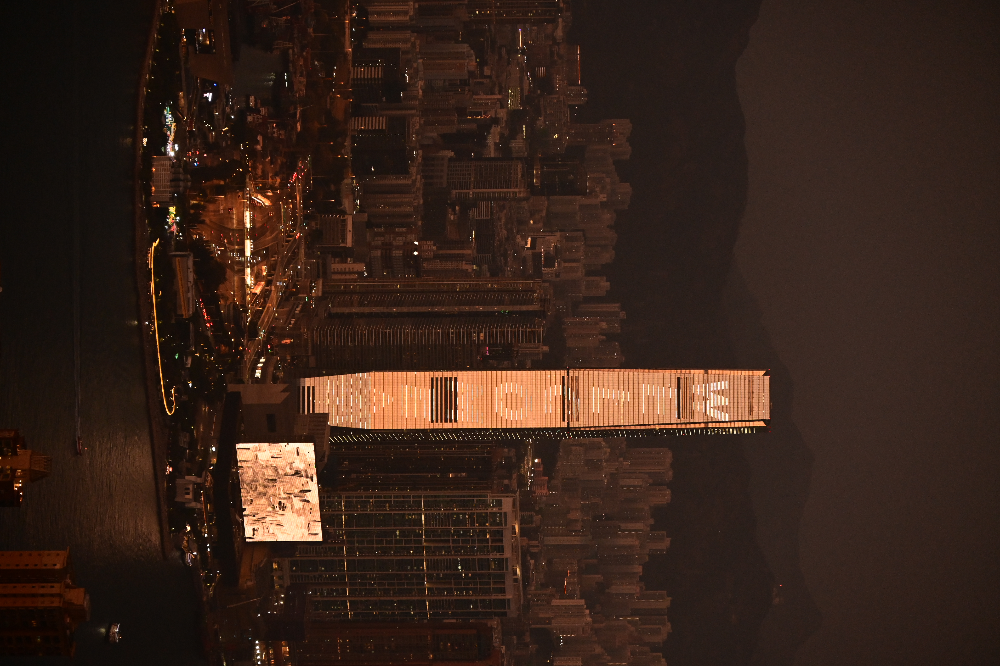
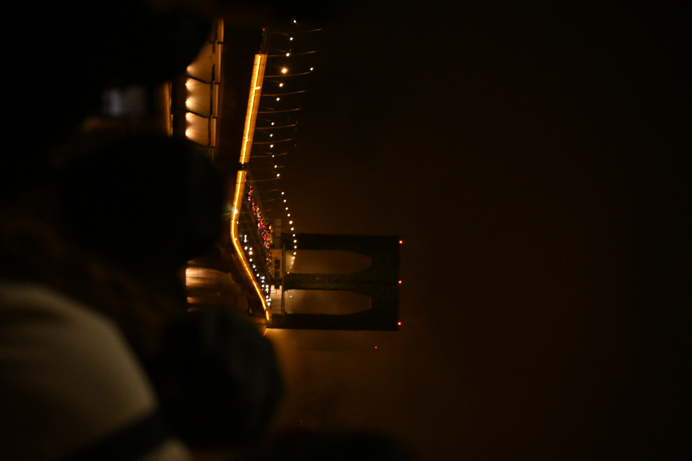

Photography
Visual Notes
I use photography to document cities, light, spaces, and small moments in everyday life. These images are also part of how I understand visual storytelling and everyday aesthetics.

Coffee Steam at the Hidden Corner
A quiet storefront becomes a small shelter for warmth, conversation, and passing time.

Dusk Falling on the Market
The market is held between daylight and neon, where everyday noise turns soft.

Flowers Leaning Toward Water
The flowers seem to borrow their softness from the water beside them.

A Cat Beneath Green Silence
A small animal pauses in the green shade, making the street feel briefly still.

Mist Resting Under the Eaves
The old roofline holds the mist gently, as if the morning has not fully arrived.

Exit Sign in Fading Light
A simple exit becomes cinematic when the light begins to withdraw.

Golden Tower above Victoria Harbour
The tower rises through the harbour light, bright but strangely distant.

Bridge Lights Woven into Night
Lines of light cross the dark water like a woven pattern of the city.